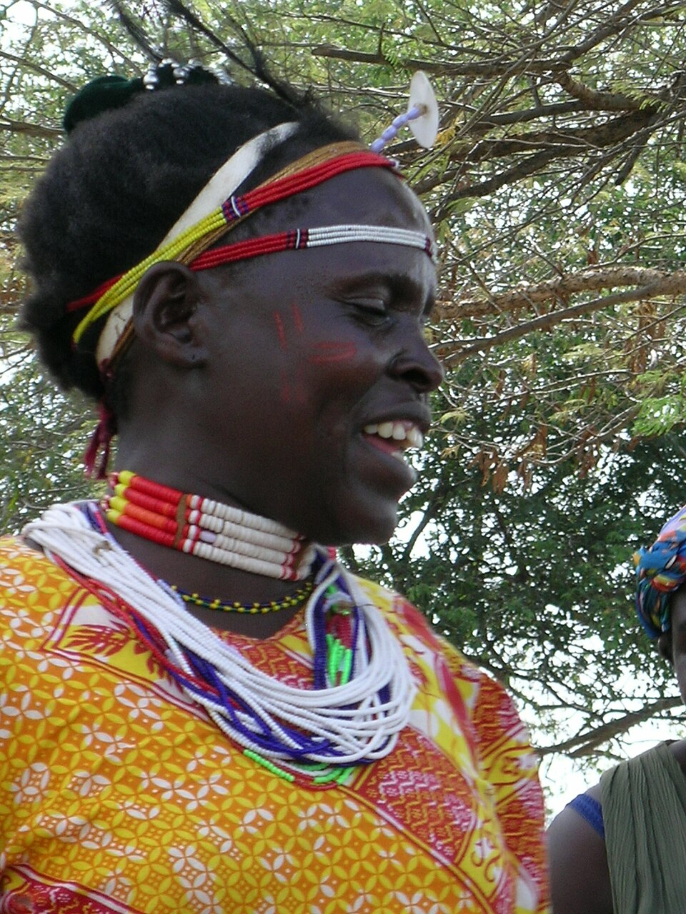
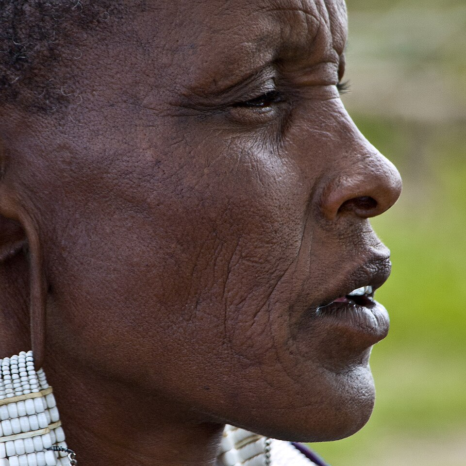
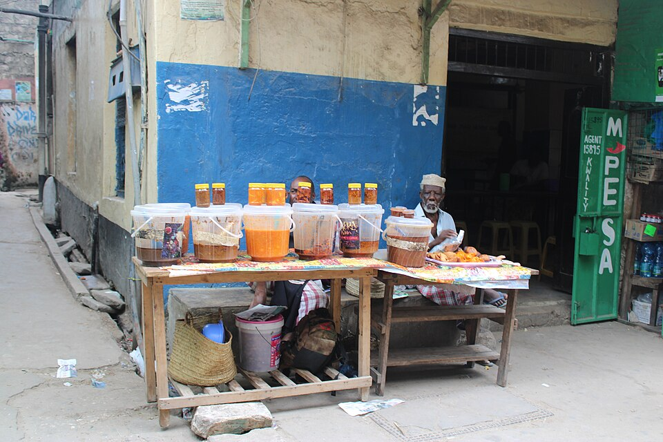

Wanjiru Mwangi
Based: Nairobi
Languages: English, Swahili, Kikuyu
Speciality: City walks and history
Rating: 4.9 out of 5
Travel Kenya with a verified local guide by your side.
Prices are per day, in Kenya shillings, and cover the guide's time — park fees, transport and meals are agreed with the guide before the trip.
Search by place, service, or words. Only verified guides are shown. This search runs on the live system, so the system must be running on your computer (see How It Works).
Prefer to browse? The verified guides are listed below. Open a guide to see their full profile, reviews, and how to request them.

Based: Nairobi
Languages: English, Swahili, Kikuyu
Speciality: City walks and history
Rating: 4.9 out of 5

Based: Maasai Mara, Narok
Languages: English, Swahili, Maa
Speciality: Safari and Maasai culture
Rating: 5.0 out of 5

Based: Lamu Old Town
Languages: English, Swahili, Arabic
Speciality: Old town walks and dhow trips
Rating: 4.9 out of 5
Based: Kisumu, Lake Victoria
Languages: English, Swahili, Luo
Speciality: Lakeside life and culture
Rating: 4.8 out of 5
| Guide | Base town | Languages | Speciality | Rating | Price per day (KES) |
|---|---|---|---|---|---|
| Wanjiru Mwangi | Nairobi | English, Swahili, Kikuyu | City walks and history | 4.9 | 3,500 |
| Naserian Lekuton | Maasai Mara | English, Swahili, Maa | Safari and Maasai culture | 5.0 | 6,000 |
| Yusuf Abdalla | Lamu | English, Swahili, Arabic | Old town walks and dhow trips | 4.9 | 4,000 |
| Otieno Odhiambo | Kisumu | English, Swahili, Luo | Lakeside life and culture | 4.8 | 3,000 |
| Amina Hassan | Diani Beach | English, Swahili | Beach days and Swahili coast | 4.7 | 3,500 |
| David Kamau | Amboseli | English, Swahili, Kikuyu | Wildlife viewing and photography | 4.8 | 5,500 |
| 6 verified guides listed | Average 4.9 | From KES 3,000 | |||
Found a guide you like? Request them by name in the message box.